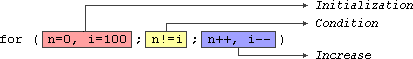

|
Section 2.1 Control Structures. |
 |
|
| |
|
Section 2.1 Control Structures. |
|
|
| |
A program is usually not limited to a linear sequence of instructions. During its process it may bifurcate, repeat code or take decisions. For that purpose, C++ provides control structures that serve to specify what and how has to perform our program.
With the introduction of control sequences we are going to have to introduce a new concept: the block of instructions. A block of instructions is a group of instructions separated by semicolons (;) but grouped in a block delimited by curly bracket signs: { and }.
Most of the control structures that we will see in this section allow a generic statement as parameter, this refers to either a single instruction or a block of instructions, as we want. If we want the statement to be a single instruction we do not need to enclose it between curly-brackets ({}). If we want the statement to be more than a single instruction we must enclose them between curly brackets ({}) forming a block of instructions.
if (condition) statementwhere condition is the expression that is being evaluated. If this condition is true, statement is executed. If it is false, statement is ignored (not executed) and the program continues on the next instruction after the conditional structure.
For example, the following code fragment prints out x is 100 only
if the value stored in variable x is indeed 100:
if (x == 100)If we want more than a single instruction to be executed in case that condition is true we can specify a block of instructions using curly brackets { }:
cout << "x is 100";
if (x == 100)
{
cout << "x is ";
cout << x;
}
We can additionally specify what we want that happens if the condition
is not fulfilled by using the keyword else. Its form used in conjunction
with if is:
if (condition) statement1 else statement2For example:
if (x == 100)prints out on the screen x is 100 if indeed x is worth 100, but if it is not -and only if not- it prints out x is not 100.
cout << "x is 100";
else
cout << "x is not 100";
The if + else structures can be concatenated with the intention of verifying
a range of values. The following example shows its use telling if the present value
stored in x is positive, negative or none of the previous, that is to say,
equal to zero.
if (x > 0)Remember that in case we want that more than a single instruction is executed we must group them in a block of instructions by using curly brackets { }.
cout << "x is positive";
else if (x < 0)
cout << "x is negative";
else
cout << "x is 0";
while (expression) statementand its function is simply to repeat statement while expression is true.
For example, we are going to make a program to count down using a while loop:
// custom countdown using while
#include <iostream.h>
int main ()
{
int n;
cout << "Enter the starting number > ";
cin >> n;
while (n>0) {
cout << n << ", ";
--n;
}
cout << "FIRE!";
return 0;
}
|
Enter the starting number > 8 8, 7, 6, 5, 4, 3, 2, 1, FIRE! |
When the program starts the user is prompted to insert a starting number for the countdown. Then the while loop begins, if the value entered by the user fulfills the condition n>0 (that n be greater than 0 ), the block of instructions that follows will execute indefinite times while the condition (n>0) remains being true.
All the process in the program above can be interpreted according to the following script: beginning in main:
We must consider that the loop has to end at some point, therefore, within the block of instructions (loop's statement) we must provide some method that forces condition to become false at some moment, otherwise the loop will continue looping forever. In this case we have included --n; that causes the condition to become false after some loop repetitions: when n becomes 0, that is where our countdown ends.
Of course this is a so simple action for our computer that the whole countdown is performed instantly without practical delay between numbers.
do statement while (condition);Its functionality is exactly the same as the while loop except that condition in the do-while is evaluated after the execution of statement instead of before, granting at least one execution of statement even if condition is never fulfilled. For example, the following program echoes any number you enter until you enter 0.
// number echoer
#include <iostream.h>
int main ()
{
unsigned long n;
do {
cout << "Enter number (0 to end): ";
cin >> n;
cout << "You entered: " << n << "\n";
} while (n != 0);
return 0;
}
|
Enter number (0 to end): 12345 You entered: 12345 Enter number (0 to end): 160277 You entered: 160277 Enter number (0 to end): 0 You entered: 0 |
The do-while loop is usually used when the condition that has to determine its end is determined within the loop statement, like in the previous case, where the user input within the block of intructions is what determines the end of the loop. If you never enter the 0 value in the previous example the loop will never end.
for (initialization; condition; increase) statement;and its main function is to repeat statement while condition remains true, like the while loop. But in addition, for provides places to specify an initialization instruction and an increase instruction. So this loop is specially designed to perform a repetitive action with a counter.
It works the following way:
1, initialization is executed. Generally it is a initial value setting for a counter varible. This is executed only once.Here is an example of countdown using a for loop.
2, condition is checked, if it is true the loop continues, otherwise the loop finishes and statement is skipped.
3, statement is executed. As usual, it can be either a single instruction or a block of instructions enclosed within curly brackets { }.
4, finally, whatever is specified in the increase field is executed and the loop gets back to step 2.
// countdown using a for loop
#include <iostream.h>
int main ()
{
for (int n=10; n>0; n--) {
cout << n << ", ";
}
cout << "FIRE!";
return 0;
}
| 10, 9, 8, 7, 6, 5, 4, 3, 2, 1, FIRE! |
The initialization and increase fields are optional. They can be avoided but not the semicolon signs among them. Thus, for example we could write: for (;n<10;) if we want to specify no initialization neither increase; or for (;n<10;n++) if we want to include an increase field but not an initialization.
Optionally, using the comma operator (,) we can specify more than one instruction in any of the fields included in a for loop, like in initialization, for example. The comma operator (,) is an instruction separator, it serves to separate more than one instruction where only one instruction is generally expected. For example, suppose that we wanted to intialize more than one variable in our loop:
for ( n=0, i=100 ; n!=i ; n++, i-- )
{
// whatever here...
}
n starts with 0 and i with 100, the condition is (n!=i) (that n be not equal to i). Beacuse n is increased by one and i decreased, the loop's condition will become false after the 50th loop, when both n and i will be equal to 50.
// break loop example
#include <iostream.h>
int main ()
{
int n;
for (n=10; n>0; n--) {
cout << n << ", ";
if (n==3)
{
cout << "countdown aborted!";
break;
}
}
return 0;
}
| 10, 9, 8, 7, 6, 5, 4, countdown aborted! |
// break loop example
#include <iostream.h>
int main ()
{
for (int n=10; n>0; n--) {
if (n==5) continue;
cout << n << ", ";
}
cout << "FIRE!";
return 0;
}
| 10, 9, 8, 7, 6, 4, 3, 2, 1, FIRE! |
The destination point is identified by a label, which is then used as argument for the goto instruction. A label is made of a valid identifier followed by a colon (:)
This instruction does not have a concrete utility in structured or object oriented programming aside from those that low-level programming fans may find to it. For example, here is our countdown loop using goto:
// goto loop example
#include <iostream.h>
int main ()
{
int n=10;
loop:
cout << n << ", ";
n--;
if (n>0) goto loop;
cout << "FIRE!";
return 0;
}
| 10, 9, 8, 7, 6, 5, 4, 3, 2, 1, FIRE! |
The purpose of exit is to terminate the running program with an
specific exit code. Its prototype is:
void exit (int exit code);The exit code is used by some operating systems and may be used by calling programs. By convention, an exit code of 0 means that the program finished normally and any other value means an error happened.
switch (expression) {It works in the following way: switch evaluates expression and checks if it is equivalent to constant1, if it is, it executes block of instructions 1 until it finds the break keyword, moment at which the program will jump to the end of the switch selective structure.
case constant1:
block of instructions 1
break;
case constant2:
block of instructions 2
break;
.
.
.
default:
default block of instructions
}
Both following code fragments are equivalent:
| switch example | if-else equivalent |
switch (x) {
case 1:
cout << "x is 1";
break;
case 2:
cout << "x is 2";
break;
default:
cout << "value of x unknown";
}
|
if (x == 1) {
cout << "x is 1";
}
else if (x == 2) {
cout << "x is 2";
}
else {
cout << "value of x unknown";
}
|
I have commented before that the syntax of the switch instruction is a bit peculiar. Notice the inclusion of the break instructions at the end of each block. This is necessary because if for example we did not include it after block of instructions 1 the program would not jump to the end of the switch selective block (}) and it would follow executing the rest of blocks of instructions until the first appearing of the break instruction or the end of the switch selective block. This makes unnecessary to include curly brackets { } in each of the cases, and can also be useful to execute one same block of instructions for different possible values for the expression evaluated, for example:
Notice that switch can only be used to compare an expression with different constants. Thus we cannot put variables (case (n*2):) or ranges (case (1..3):) because they are not valid constants.
switch (x) { case 1: case 2: case 3: cout << "x is 1, 2 or 3"; break; default: cout << "x is not 1, 2 nor 3"; }
If you need to check ranges or values that are not constants use a concatenation of if and else if sentences.
| © The C++ Resources Network, 2000-2001 - All rights reserved |
 Previous:
Previous:1-4. Comunication throgh console. |
 index |
 Next:
Next:2-2. Functions. |